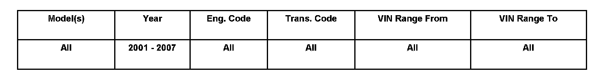
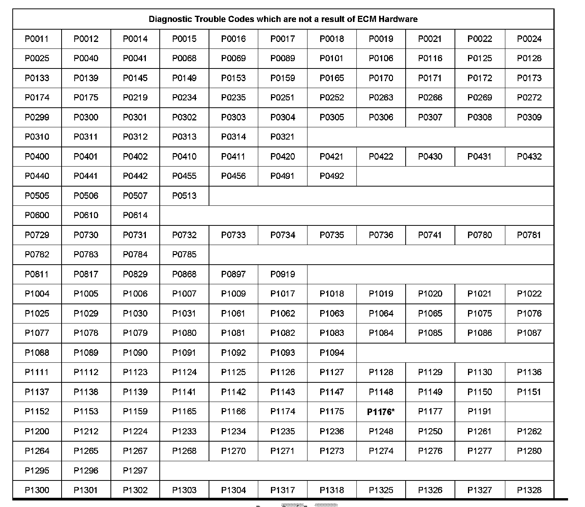
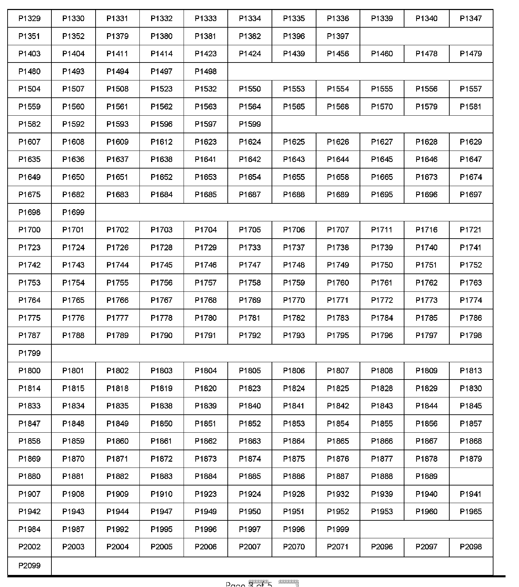
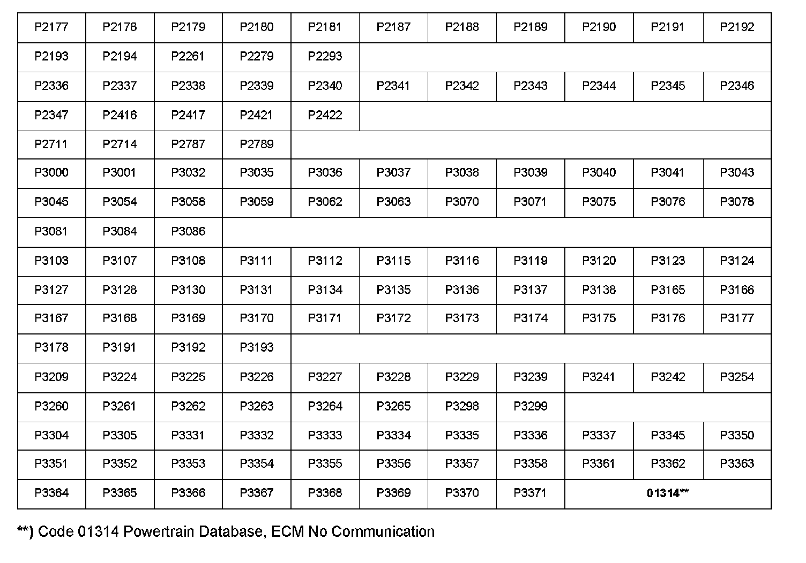
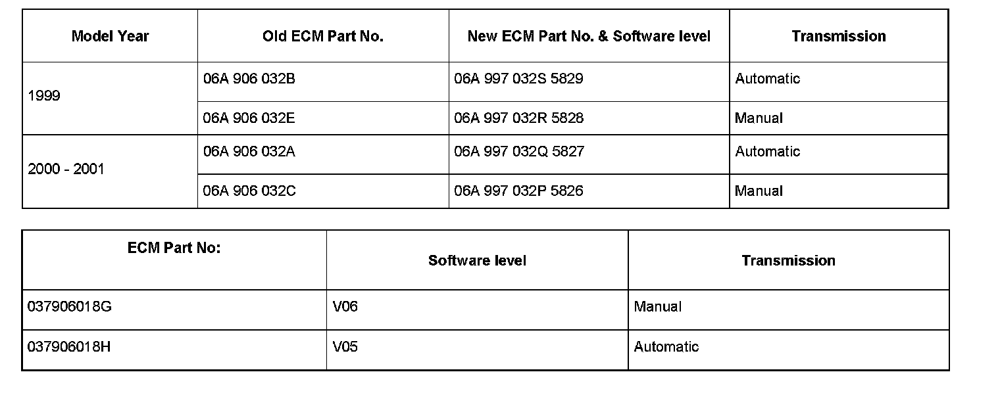

Engine Controls - Avoiding Unnecessary ECM Replacement
01 07 54July 10, 2007
2011168
Supersedes T.B. Group 01 number 06-01 dated January 19, 2006 due to additional model year and to add DTC 01314.
Condition
Engine Control Module (ECM), DO NOT Replace for These Diagnostic Trouble Codes (DTCs) Unnecessary ECM replacement.

Vehicle Information
Technical Background
Diagnostic aid.
Production Solution
No production change required
Service
Prior to replacing an ECM for any DTC:



^ Check for DTC in the table shown.
If DTC is listed in the table:
The ECM hardware is not the cause of the DTC, further diagnosis is required.
DO NOT replace an ECM for DTCs listed in the table.
See "EXCEPTION!" notes following table
Tip:
If DTC is marked with an (*) it may require an ECM replacement to obtain the latest software: see "EXCEPTION!" notes following table.
If DTC IS NOT listed in the following table:
DTC should be properly diagnosed to determine the root cause (refer to Guided Fault Finding or Repair Manual as necessary).
ALWAYS check for Technical Bulletins with possible software updates for the condition.
Tip:
This information applies to fault codes stored in addresses 01, 11 or Guided Fault Finding.
Tip:
EXCEPTION: For 1999 2001 New Beetle 1.8L Turbo (ONLY):
For the following exceptions, first rule out other potential causes utilizing Repair Manual Information, Technical Bulletins or Guided Fault Finding before replacing ECM.

For DTC P1176 (marked with *) where the ECM software level is at the old level as shown in table, may require an ECM replacement to achieve the new software level.
Warranty
Information only.
Required Parts and Tools
No Special Parts required.
No Special Tools required.
Additional Information
All part and service references provided in this Technical Bulletin are subject to change and/or removal.
Always check with your Parts Dept. and Repair Manuals for the latest information.